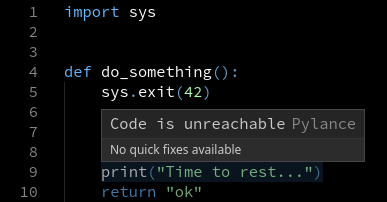
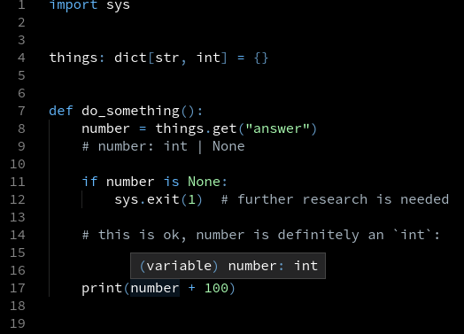

NoReturn doesn't just mean no return statement
Is this the right annotation for greet?
from typing import NoReturn
def greet(name: str) -> NoReturn:
print("Hello, {0}!".format(name))
This sounds right: after all, the function doesn't have a return statement. However, NoReturn means a very specific thing.
A function f returns NoReturn if, in the following configuration, g() never runs:
f()
g() # unreachable
It means that either:
- f always runs an infinite loop
- f always raises an exception
- f always terminates the current process.
What even is the point?
With NoReturn, static analyzers can adjust their control flow model.
For example, if you call sys.exit, Pylance knows that the next lines will never execute:

This also affects type narrowing.

Correct usage examples
# Always raises an exception
def report_syntax_error(node: TreeNode, message: str) -> NoReturn:
template = "Invalid syntax at line {0}, column {1}: {2}"
raise SyntaxError(template.format(node.line, node.col, message))
# Runs forever (or raises an exception)
async def process_events(stream: EventStream) -> NoReturn:
while True:
event = await stream.fetch()
await process_event(event)